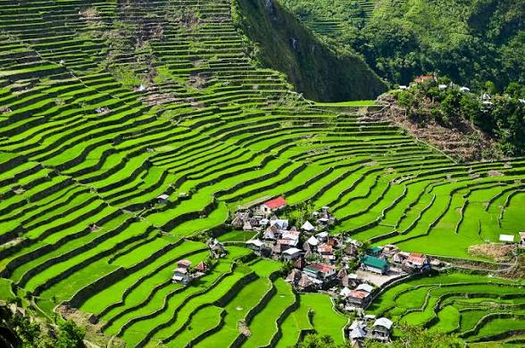
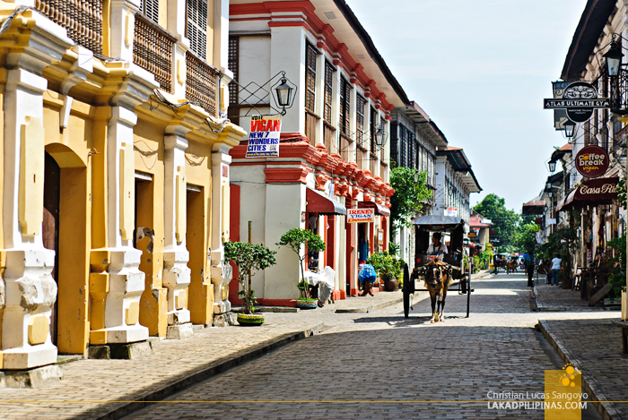
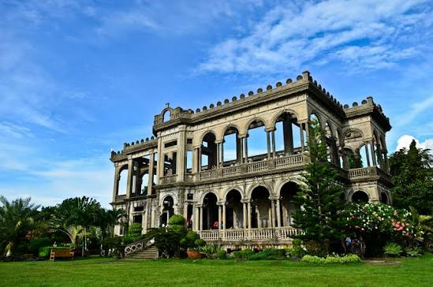
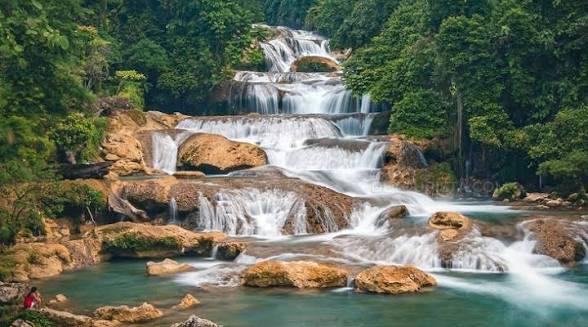
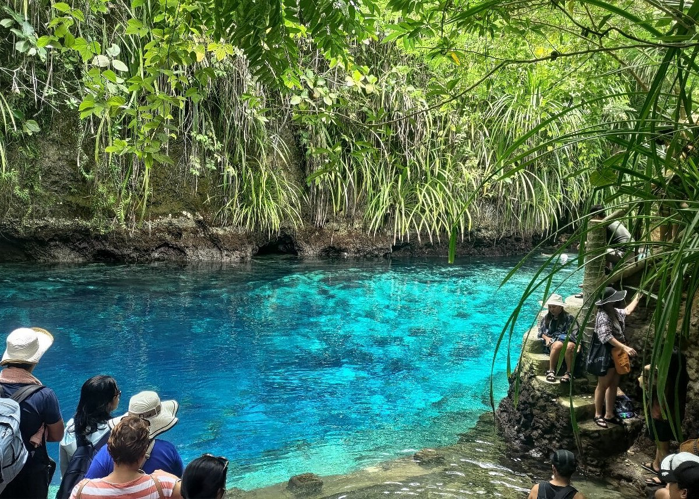
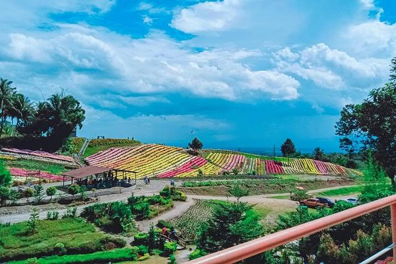
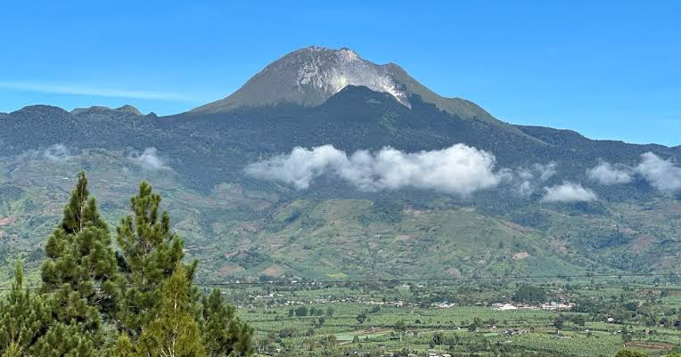

TOURIST SPOT
| HOME | PLACE | FOOD |
|---|
LUZON
 "Batad Rice Terraces"The Banaue Rice Terraces is a famous tourist spot known for its beautiful rice terraces, rich culture, and breathtaking mountain views. |  "Coron Palawan"
"Coron Palawan"
Kayangan Lake is a famous tourist spot in Coron, Palawan, known for its crystal-clear water, limestone cliffs, and stunning natural scenery. |  "Cagsawa Ruins"
"Cagsawa Ruins"
Cagsawa Ruins is a famous tourist spot in Albay, known for its historic church ruins and the beautiful view of Mayon Volcano. |  "Calle Crisologo"Calle Crisologo is a famous tourist spot in Vigan, known for its well-preserved Spanish colonial houses and historic streets. |
"Rizal Monument"
Rizal Monument is a famous landmark in Manila that honors the Philippine national hero, Dr. Jose Rizal. |
VISAYAS
 "Choclate Hills"
"Choclate Hills"
Chocolate Hills is a famous tourist spot in Bohol, known for its unique cone-shaped hills and beautiful scenery. |
"Kawasan Falls"
Kawasan Falls is a famous tourist spot in Cebu, known for its turquoise water and beautiful waterfalls. |  "Magellan's Cross"
"Magellan's Cross"
Magellan's Cross is a famous tourist spot in Cebu, known for its historical and cultural significance. |  "Boracay White Beach""
"Boracay White Beach""
Boracay White Beach is a famous tourist spot known for its white sand, clear blue water, and beautiful sunsets. |  "The Ruins"The Ruins is a famous tourist spot in Negros Occidental, known for its beautiful mansion ruins and rich history. |
MINDANAO
 "Aliwagwag Falls"Aliwagwag Falls is known for its beautiful waterfalls and peaceful natural scenery. |  "Tinuy-an Falls"
"Tinuy-an Falls"
Tinuy-an Falls is famous for its wide waterfall and clear freshwater. |  "Enchanted River"Enchanted River is known for its crystal-clear blue water and natural beauty. |  "Eden Nature Park"Eden Nature Park is a popular destination known for its gardens and cool climate. |  "Mount Apo"Mount Apo is the highest mountain in the Philippines, known for its stunning views and hiking trails. |